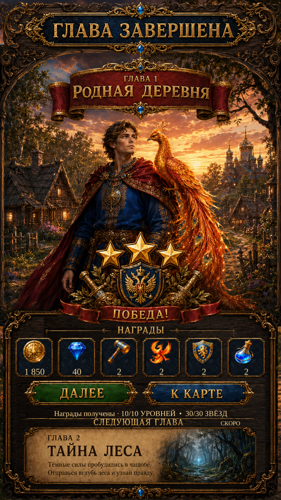

Chapter Complete · reference rebuild R1Chapter Complete · reference rebuild R1
Original visible scenery and Next Chapter lettering are restored. Repaired English banner, ribbon, button and parchment faces replace repeated texture patches; Russian original artwork and live reward values are preserved.
These are actual Unity captures with isolated test saves. Rewards summarize previous first clears; this page grants no additional bonus. The next chapter remains explicitly upcoming.
